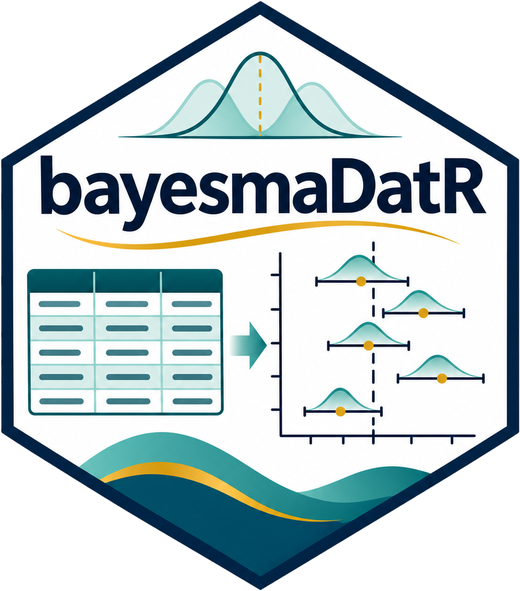

library(bayesmetaverse) # attaches bayesmaDatR, inspectR, robbR, bayesma, bayesfoRestA principled Bayesian meta-analysis workflow
This workflow takes you from a review question to a reported result. Each stage lists the Bayes-Metaverse package(s) to use, the key functions, and related software.
The stages are listed in order, but the workflow is iterative. If diagnostics or checks fail, go back and revise the model.

→ →
→  → →
→ →
Plan
protocol
0 · Review question and protocol
Define the PICO, effect measure, likelihood and primary model. Pre-specify the priors and sensitivity analyses.
Prepare
1 · Data preparation
Extract and enter study data in a structured way, with one row per study (binary, continuous or count outcomes).
bayesmaDatR::launch_data_entry()
2 · Trustworthiness assessment
Assess each study against the four INSPECT-SR domains. Document the judgements, and decide how to handle studies of concern. This complements risk-of-bias assessment; it does not replace it.
tw <- inspectR::inspect_sr(dat)
inspectR::inspect_sr_table(tw)
inspectR::inspect_sr_plot(tw)
dat_tw <- inspectR::filter_trustworthy(dat, tw)Related: scrutiny (GRIM, GRIMMER, DEBIT checks)
3 · Risk of bias assessment
Visualise domain-level risk-of-bias judgements with traffic-light and summary plots.
robbR::rob_plot(rob_dat)4 · Preliminary exploration
Explore the dependence structure, possible moderators and the distribution of effect sizes before modelling (PRIMED).
bayesma::primed(dat)Model
5 · Model specification
Choose the likelihood, the random-effects distribution, the priors on μ and τ, and whether the model is one-stage or two-stage. Check the priors with prior predictive checks.
Related: brms
6 · Model fitting
Fit the model with Stan’s MCMC sampler (by default, 4 chains).
fit <- bayesma::bayesma(dat, stage = "one_stage")7 · Model diagnostics
Check convergence (R̂, ESS, trace plots) and model fit (posterior predictive checks). If the checks fail, return to stage 5.
bayesma::diagnostics(fit)
bayesma::pp_check(fit)8 · Model comparison
Compare candidate models using LOO or leave-one-study-out cross-validation (LOSO-CV), ELPD, CRPS and calibration.
cmp <- bayesma::compare_models(fit, fit_alt)
bayesma::compare_table(cmp)
bayesma::compare_plot(cmp)Check
9 · Small-study effects and publication bias
Use funnel plots, Egger-type tests, selection models, PET-PEESE and robust Bayesian model averaging (RoBMA).
bayesma::funnel_plot(fit)
bayesma::egger(fit)
bayesma::robma(dat)Related: RoBMA
10 · Heterogeneity
Look at the posterior for τ and the predictive distribution for a new study. Consider robust or mixture random-effects distributions.
fit_mix <- bayesma::bayesma(dat, re_dist = "mixture")
bayesfoRest::forest(fit)11 · Subgroups and meta-regression
Model categorical and continuous moderators.
mr <- bayesma::meta_reg(dat, moderator = ~ dose)
bayesma::metareg_mod_plot(mr)
bayesfoRest::forest(fit, subgroup = TRUE)Related: brms
12 · Sensitivity analysis
Vary the priors, the studies included (for example, excluding high risk-of-bias or untrustworthy studies), the random-effects distribution, and one-stage versus two-stage models.
bayesma::sensitivity_plot(fit)
in
development
development
13 · Sequential evidence
Assess the accumulating evidence with a Bayesian sequential approach (Spence, Steinsaltz & Fanshawe, 2016). The package is in development.
Report
Related software
Bayes-Metaverse is designed to sit alongside established tools. These are maintained independently by their authors.
- Stan: probabilistic programming language for Bayesian inference
- brms: Bayesian multilevel models via Stan using formula syntax
- bayesmeta: fast semi-analytical Bayesian random-effects meta-analysis
- MetaStan: Bayesian meta-analysis via Stan
- RoBMA: robust Bayesian meta-analysis via model averaging
- scrutiny: error detection in summary statistics
References
- Spence GT, Steinsaltz D, Fanshawe TR. A Bayesian approach to sequential meta-analysis. Statistics in Medicine. 2016;35(29):5356–5375.
- INSPECT-SR: (add full reference)